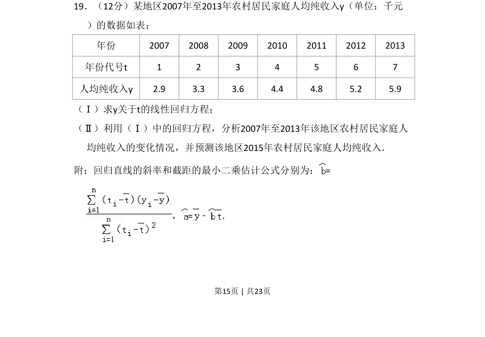
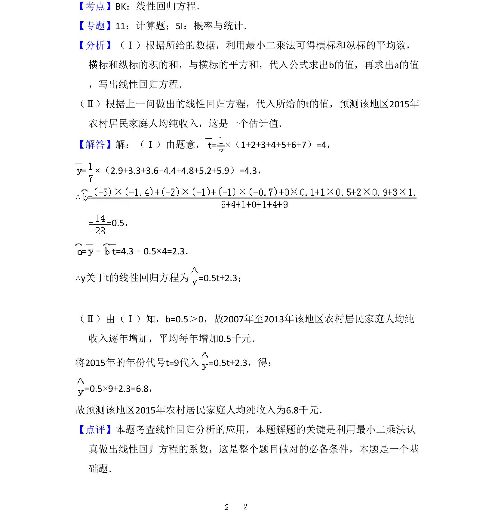

2014-理-19
考点：线性回归方程 最小二乘法 统计预测
题面


摘要
该题考查根据给定数据求线性回归方程，并结合方程进行变化分析与预测。
关联考点
答案与解析

📄 原 PDF 第 15 页：
素材/真题/吉林/2008-2024·（吉林）数学高考真题/2014年高考数学试卷（理）（新课标Ⅱ）（解析卷）.pdf
题干文本
19．（12分）某地区2007年至2013年农村居民家庭人均纯收入y（单位：千元 ）的数据如表： 年份 2007 2008 2009 2010 2011 2012 2013 年份代号t 1 2 3 4 5 6 7 人均纯收入y 2.9 3.3 3.6 4.4 4.8 5.2 5.9 （Ⅰ）求y关于t的线性回归方程； （Ⅱ）利用（Ⅰ）中的回归方程，分析2007年至2013年该地区农村居民家庭人 均纯收入的变化情况，并预测该地区2015年农村居民家庭人均纯收入． 附：回归直线的斜率和截距的最小二乘估计公式分别为：= ，=﹣ ．